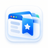

拾页浏览器同步设置
同步书签、标签组和历史记录到你的拾页。
连接拾页站点
等待同步
新建标签页
新建标签页使用浏览器默认页面。需要时可点击下方按钮打开拾页。
保留原来的浏览器主页设置。
使用说明
浏览器资料变化后会自动同步，每分钟也会检查一次。云端站点保持在线即可。
支持 HTTP / HTTPS 书签；标签组同步名称、颜色、折叠状态和网页顺序。移除标签组时，网页会保留。
历史同步最近七天的浏览摘要（每浏览器最多 10,000 个网址）。导入浏览器的记录使用当前时间，原访问时间和次数保存在站点。
站点及浏览器内的删除会同步到其他已配对浏览器。回收站和冲突处理在站点中管理。